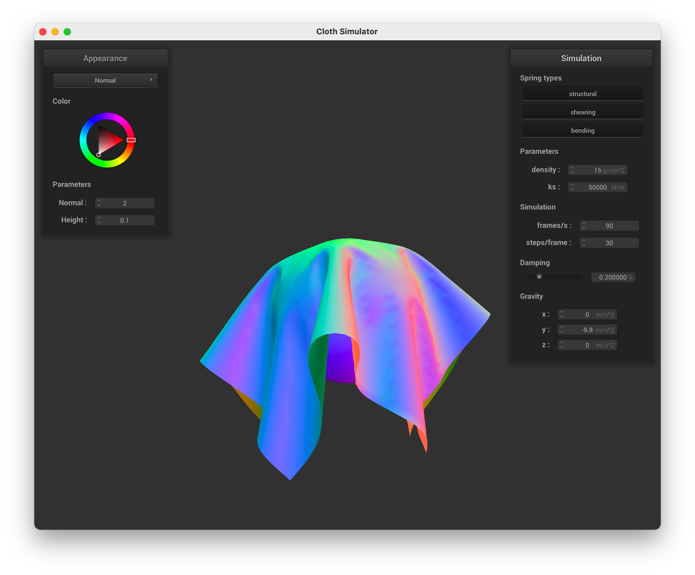
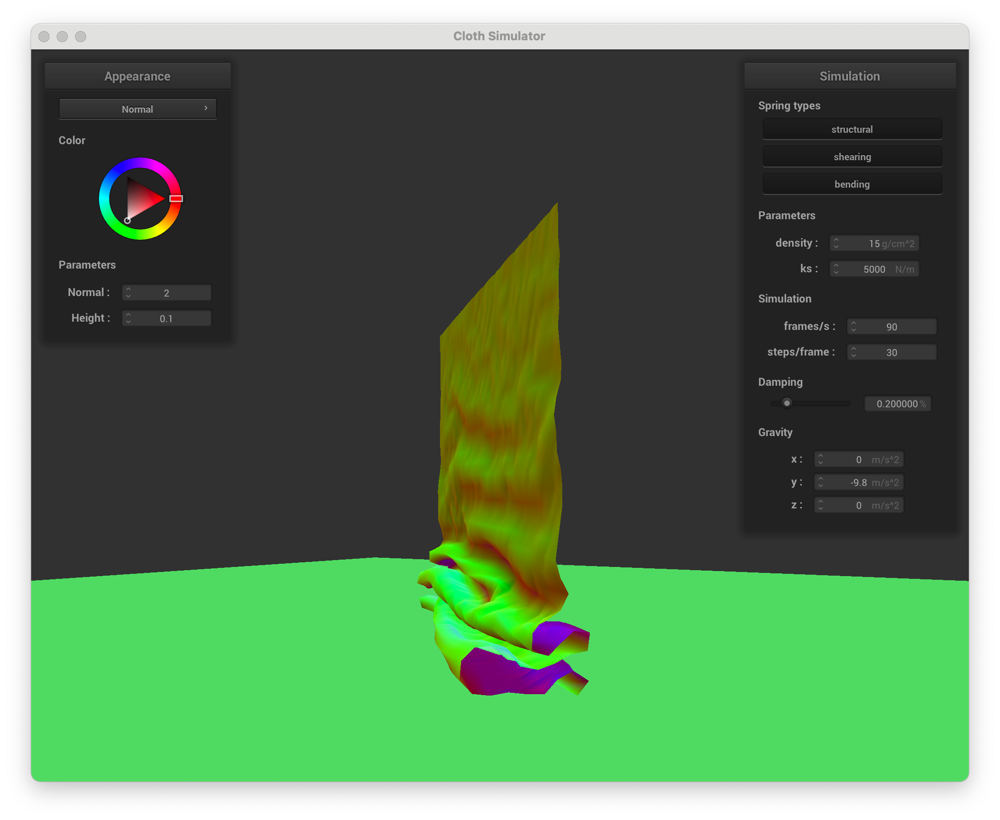
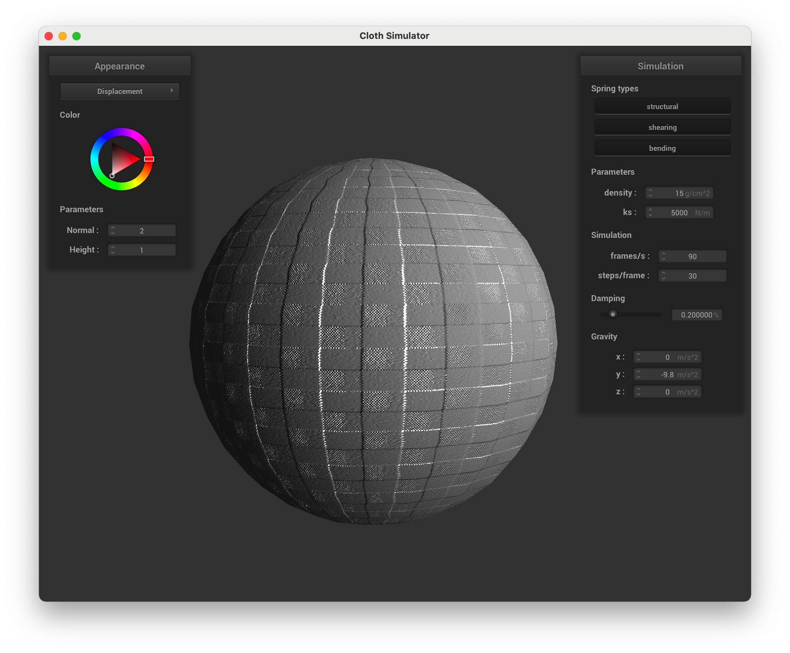

Project 4: Cloth Simulation
CS 184: Computer Graphics and Imaging, Spring 2022
David McAllister and James Dai
Part 1: Masses and Springs
We implemented the grid of masses and springs as shown below.
scene/pinned2.json without any shearing constraints.
scene/pinned2.json with only shearing constraints.
scene/pinned2.json with all constraints included.
Part 2: Simulation via Numerical Integration
We implemented cloth simulation so that the grid of masses and springs can realistically drape from pinned corners.
scene/pinned4.json with default parameters in its final resting state.
We also tuned the parameter values to investigate how it would affect the simulation.
ks value:
scene/pinned4.json with low ks value. A lower spring constant leads to less force to counteract gravity and a deeper droop.
scene/pinned4.json with high ks value. This has the opposite effect, leading to very little droop.
Density value:
scene/pinned4.json with very high density. This also leads to significant droop, but the ripples in the fabric are much tighter.
scene/pinned4.json with very low density. This has a nearly identical effect to a very high spring constant.
Damping value:
scene/pinned4.json with very high damping. This leads to the cloth falling very slowly into its final resting state.
scene/pinned4.json with very no damping. The fabric doesn't lose energy with these parameters, so it swings high on the other side and has pronounced ripples.
Part 3: Handling Collisions with Other Objects
We first implemented collisions with spheres, which was pretty straightforward.

scene/sphere.json with default ks spring constant of 5000.
scene/sphere.json with one tenth the spring constant, the cloth is much less rigid with more, smaller ridges.

scene/sphere.json with a spring constantof 50,000, the cloth is very ridgid and doesn't wrap much around the sphere.
Next, we implemented plane collision. It took a while to debug it such that the cloth didn't clip the surface or slide after collision due to inconsistencies with the correction vectors. Our final solution doesn't have these problems.
scene/plane.json with cloth resting on the plane.
Part 4: Self-Collisions
After implementing hash-based self collisions, the cloth falls as follows with default values.
scene/selfCollision.json upon first contact.

scene/selfCollision.json halfway through falling.
scene/selfCollision.json after many time steps.
Value tuning:
scene/selfCollision.json with high spring constant ks. This leads to large, wide ripples just like when draping from pinned points or the sphere.
scene/selfCollision.json with low spring constant ks. This has the opposite effect, with lots of small ripples.
scene/selfCollision.json with high density. This leads to an irregular resting pattern on the plane.
scene/selfCollision.json with low density. This leads to very few bends in the final resting pattern.
Part 5: Shaders
Shader programs determine the brightness and color of a pixel based on the underlying geometry, lights, and cameras in a scene. Vertex shaders can update vertices and set variables that fragment shaders use. Fragment shaders then figure out the color values for each pixel based on the vertex shaders' outputs.
The Blinn-Phong shading model superimposes an ambient, specular, and diffuse shading to produce a more realistic effect than standard diffuse shaders without too high of a computational requirement. For example, it approximates specular highlights from reflected lights, while diffuse shading does not.
scene/sphere.json with Blinn-Phong diffuse shading enabled.
scene/sphere.json with Blinn-Phong ambient shading enabled.
scene/sphere.json with Blinn-Phong specular shading enabled.
scene/sphere.json with full Blinn-Phong shading enabled.
Texture mapping shader:

scene/sphere.json with picture of my friend, Adel, as the texture.
scene/sphere.json after draping over the sphere.
We used texture 4 to demonstrate our bump and displacement mapping shaders. Our height function outputted the euclidean length of the color vector
Bump mapping shader:
scene/sphere.json cloth with bump mapping and vertical/horizontal resolution of 16.
scene/sphere.json sphere with bump mapping and vertical/horizontal resolution of 16.

scene/sphere.json cloth with bump mapping and vertical/horizontal resolution of 129.
scene/sphere.json sphere with bump mapping and vertical/horizontal resolution of 128.
Increasing the sphere's resolution did not noticeably affect the quality of the results since bump mapping does not modify the underlying geometry!
Displacement mapping shader:

scene/sphere.json cloth with displacement mapping and vertical/horizontal resolution of 16.
scene/sphere.json cloth with displacement mapping and vertical/horizontal resolution of 128.
Increasing the sphere's resolution had a dramatic effect on the quality of the shader, since higher-frequency displacement detail can be displayed.
From a distance and with additional detail of a low enough variance, it's hard to tell the difference between bump and displacement mapping. It mostly shows up on the edges of the rendered geometry, such as with the brick bumps on the side of the sphere. Displacement mapping comes at a higher price in terms of needed geometry resolution and computation time, though.
Mirror shader:
scene/sphere.json cloth draped over sphere with mirror shader.
scene/sphere.json sphere with mirror shader.
CSS styling provided by StackEdit Markdown to HTML. stackedit.io